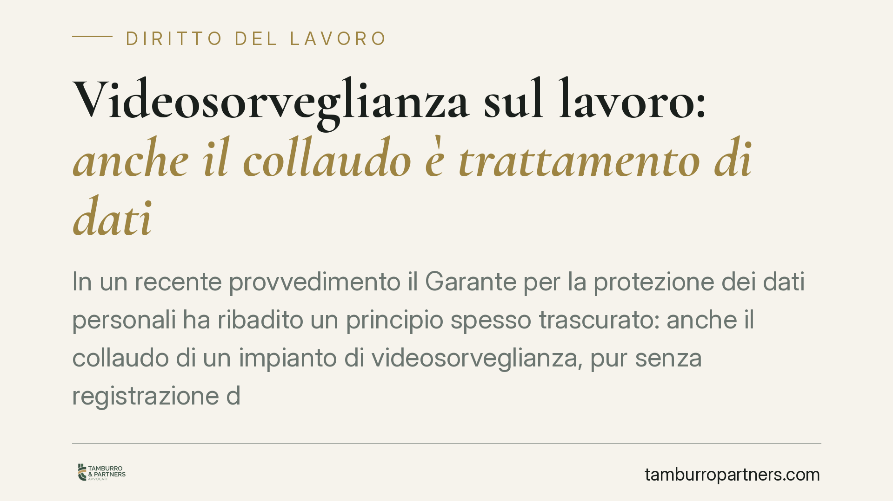

Videosorveglianza sul lavoro: anche il collaudo è trattamento di dati
In un recente provvedimento il Garante per la protezione dei dati personali ha ribadito un principio spesso trascurato: anche il collaudo di un impianto di videosorveglianza, pur senza registrazione delle immagini, è trattamento di dati. Serve informativa ai lavoratori e piena conformità all'accordo sindacale previsto dall'art. 4 dello Statuto dei lavoratori. La difformità è costata una sanzione.

Il caso
Un ente pubblico ha installato un impianto di videosorveglianza. Nella fase di collaudo le telecamere trasmettevano immagini pur senza registrarle: un'operazione considerata, dall'ente, meramente tecnica e quindi estranea alla disciplina sulla protezione dei dati.
Il Garante ha ritenuto diversamente. Sono emersi due profili critici: l'assenza di informativa ai dipendenti e la difformità dell'impianto effettivamente installato rispetto a quanto concordato con le rappresentanze sindacali ai sensi dell'art. 4 dello Statuto dei lavoratori.
Inquadramento normativo
Il Regolamento UE 2016/679 (GDPR) definisce il "trattamento" in modo ampio: all'art. 4, n. 2, rientra qualsiasi operazione applicata a dati personali, compresa la semplice consultazione o visualizzazione. Non è quindi necessaria la memorizzazione: inquadrare una persona su un monitor, anche in tempo reale e senza archiviare nulla, costituisce già trattamento.
Da qui discende l'obbligo di informativa previsto dall'art. 13 GDPR, che deve essere reso ai lavoratori prima dell'avvio del trattamento. Parallelamente opera l'art. 4 della L. 300/1970 (Statuto dei lavoratori): gli impianti da cui possa derivare anche la possibilità di controllo a distanza dell'attività dei lavoratori richiedono un accordo con le rappresentanze sindacali o, in mancanza, l'autorizzazione dell'Ispettorato del lavoro.
Quando l'impianto installato diverge da quello autorizzato, viene meno la copertura dell'accordo. Il regime sanzionatorio applicabile alle violazioni del GDPR è quello dell'art. 83 del Regolamento, che gradua l'importo della sanzione amministrativa in base alla gravità, alla durata e alla natura della violazione.
Perché il collaudo conta
La distinzione tra trattamento e registrazione è il cuore della vicenda.
Molte organizzazioni ritengono che, finché le immagini non vengono salvate, non vi sia alcun dato da proteggere. È un equivoco. Il GDPR tutela i dati personali in ogni fase: la trasmissione dell'immagine su uno schermo, anche temporanea, coinvolge l'identità di una persona fisica ed è trattamento a tutti gli effetti.
Il collaudo non è quindi una zona franca. Se le telecamere "vedono" i lavoratori, gli obblighi informativi e le garanzie dell'art. 4 operano già in quel momento, non solo al momento della messa a regime.
Implicazioni pratiche
Per il datore di lavoro – pubblico o privato – le conseguenze sono concrete.
In primo luogo, l'informativa va predisposta e resa prima di qualsiasi attivazione, collaudo incluso. In secondo luogo, l'impianto fisicamente installato deve corrispondere a quello descritto nell'accordo sindacale o nell'autorizzazione dell'Ispettorato: numero, posizione e angolo di ripresa delle telecamere non sono dettagli, ma elementi che definiscono il perimetro del controllo consentito.
Va poi considerato un effetto meno immediato ma rilevante in sede contenziosa: le immagini raccolte in violazione dell'art. 4 della L. 300/1970 sono processualmente inutilizzabili. Un impianto difforme non solo espone a sanzioni, ma vanifica anche l'eventuale valore probatorio delle riprese, ad esempio in un procedimento disciplinare.
Cosa fare in concreto
- Mappa l'intero impianto prima dell'accensione: verifica che telecamere, posizioni e campi di ripresa coincidano con l'accordo sindacale o l'autorizzazione dell'Ispettorato.
- Rendi l'informativa ex art. 13 GDPR ai lavoratori prima del collaudo, non dopo: tratta la fase di prova come un trattamento effettivo.
- Documenta la conformità: conserva accordo, autorizzazioni, planimetrie e verbali di collaudo, così da poter dimostrare la corrispondenza tra progetto e impianto.
- Sottoponi il progetto a verifica tecnico-giuridica prima dell'installazione, non in fase di contenzioso: è opportuno coinvolgere tempestivamente le funzioni competenti in materia di protezione dei dati.
- Riallinea gli impianti preesistenti: anche le installazioni risalenti vanno riverificate alla luce della nozione ampia di trattamento.
Nota
Il principio affermato dal Garante non introduce un obbligo nuovo, ma applica in modo rigoroso una regola già presente nel GDPR. È proprio la sua apparente ovvietà a renderlo pericoloso: viene dato per scontato e, nella pratica, frequentemente ignorato nella fase di avvio degli impianti.
Ogni storia di lavoro ha i suoi tempi.
Se gestisci HR e vuoi un confronto su contenzioso, ispezioni o licenziamenti, scrivi allo studio. Ti rispondiamo entro un giorno lavorativo.